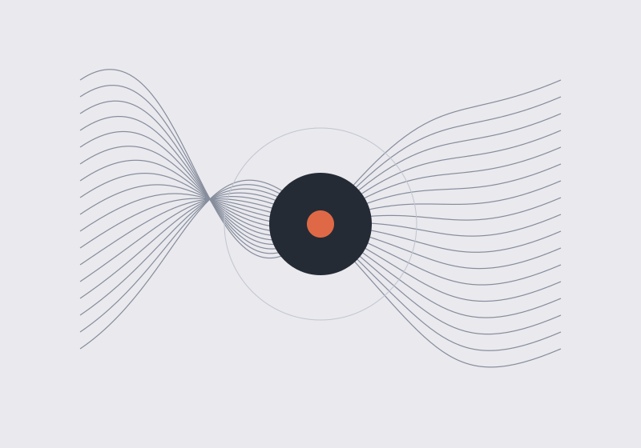
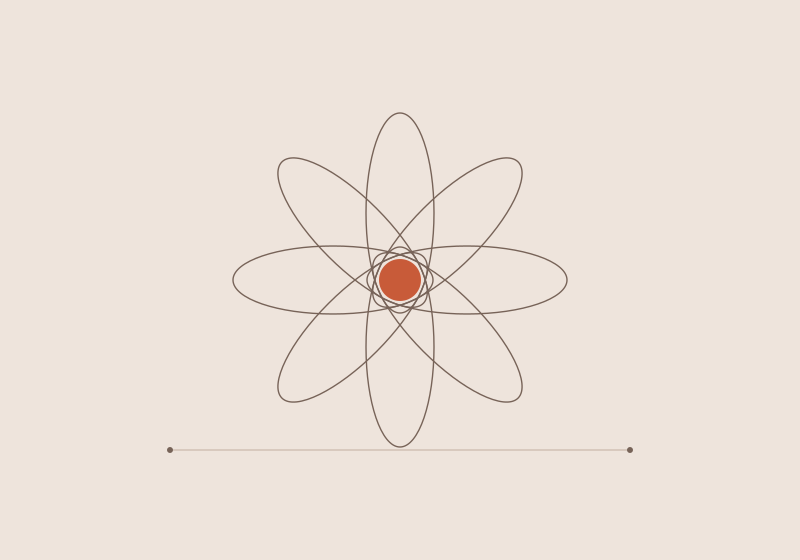

Concept illustration
Concept illustration01Climate & agriculture
NovaYield
A farm-adaptation decision-support prototype exploring crop-rotation options with NASA Earth observations, local soil information, crop characteristics, and farmer priorities.
Contribution · Backend engineering and team leadership
Selected stack: FastAPI · Python · MongoDB · React / Vite
Backend and frontend implemented

Concept illustration02Application & ML
NeuroScan
A functional application with two machine-learning models that I trained.
Contribution · Backend and frontend development
Functional; not deployed
 Concept illustration
Concept illustration03Backend engineering
Application Tracking System Backend
A backend API for a hiring-pipeline application.
.NET 9 · PostgreSQL · Entity Framework Core

Concept illustration04Web application
Premiere Sparkles Salon Website
A salon portfolio website with an appointment-booking frontend. Booking is handled by a third-party API.
Next.js